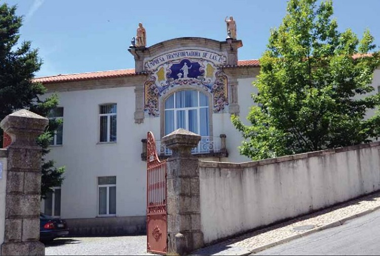

Erasmus in Covilha
Erasmus in CovilhaFaculty of Engineering
Installed in the former wool processing company building, the Faculty of Engineering extends along Ribeira da Degoldra, in the mountain foothills where technology and nature meet and inspire each other. Bridges and aircraft were still pioneer areas in the embryo of wires of UBI and they have now reached a solid and magnifi cent ball, weaved for years of learning and research. Equipped with laboratories and workrooms of and for all, these units of research were created by Science and Technology Foundation who are in permanent contact with the regional and national companies. These units are the Aeronautics and Astronautics Research Center – AEROG (Pole of the Laboratory for Energy, Transport and Aeronautics), the Center for Aerospace Science and Technologies (CAST), the Communications and Multimedia Laboratory – Institute for Telecommunications (Pole of Telecommunications Institute), the Remote Detection Unit, the Centre for Constructive Material and Technologies (C-MADE) and the Textile and Paper Materials Unit.
Engineering Faculty integrates the Departments of Science and Textile Technology, Aerospace Sciences, Civil and Architecture, Electromechanics and Informatics. Under the Bologna Process, which has introduced signifi cant changes to the level of university education, UBI has adapted successfully in 2006, his Bachelors of Engineering fostering a growing closeness to teaching and research to the real needs of industry. Engineering Faculty promotes regularly the scientifi c and technological dissemination by organizing seminars and conferences on topics connected to specifi c areas coordinated by those departments, involving professors, national and foreign expert students. Parallel at science progress, Engineering Faculty supports and stimulates cultural and leisure activities which are developed by professors, researchers, staff and student centers.